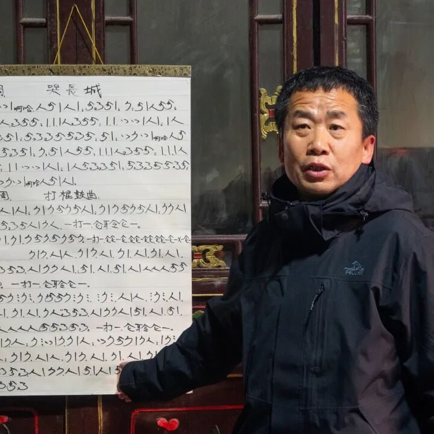
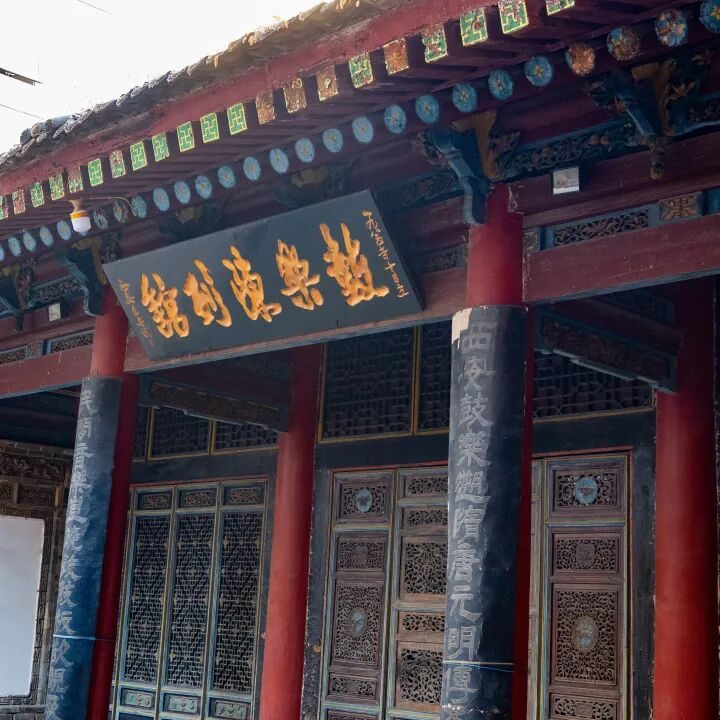
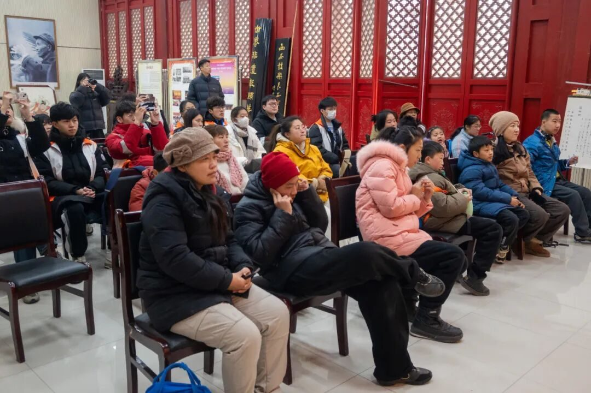
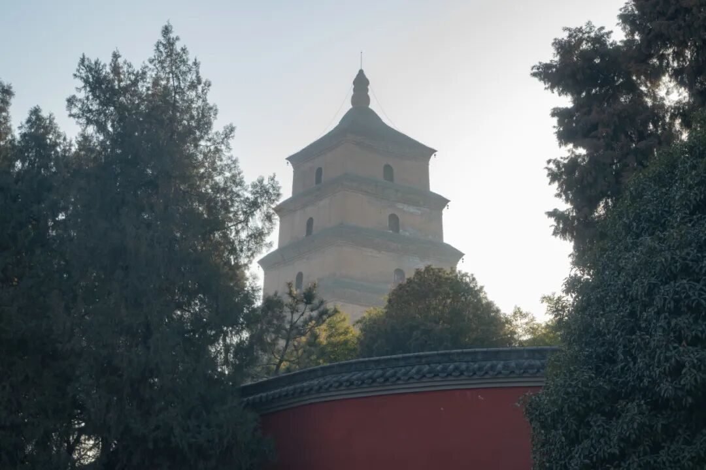
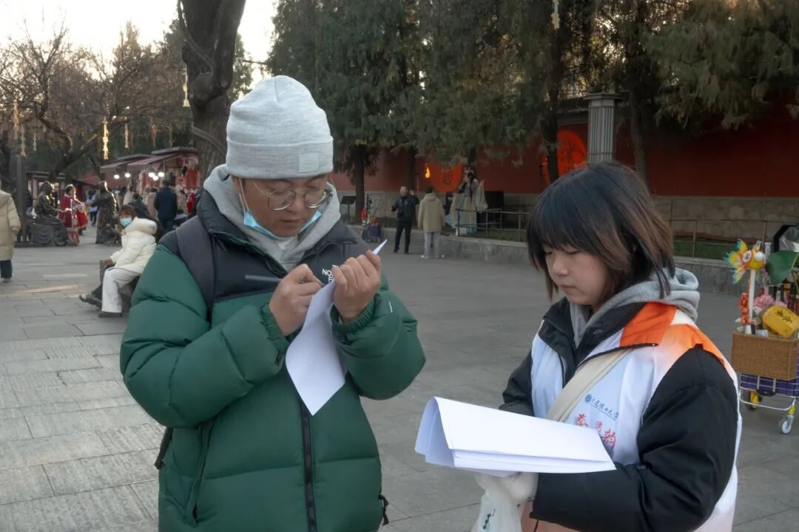
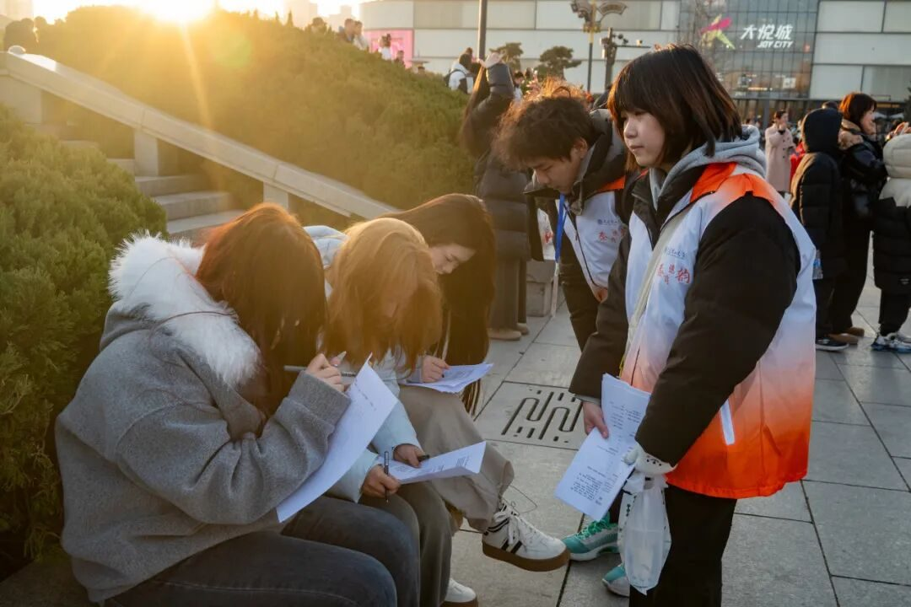

【行者无疆·秦育遗韵】聆听鼓乐遗音，邂逅心灵暖阳

聆听鼓乐遗音
邂逅心灵暖阳
何家营鼓乐社
钧天光乐

今日，阳光正好，行者们踏上了充满文化韵味与温暖人情的旅程。上午，行者们来到了远近闻名的何家营鼓乐社。踏入鼓乐社，历史的厚重感扑面而来，这里的一砖一瓦似乎都在静静诉说着何家营鼓乐的悠悠过往。


在郑亚福老师的热情接待下，我们深入了解了何家营鼓乐的发展历程。从它的起源，到在岁月长河中经历的起起落落，每一段故事都让我们对这一古老艺术形式愈发着迷。更幸运的是，我们现场聆听了何家营鼓乐的演奏。那悠扬的旋律、灵动的节奏，仿佛穿越千年而来，将我们带入了一个充满古韵的世界。演奏者们全情投入，每一个音符都饱含着对这门艺术的热爱与传承的使命感，让我们沉醉其中，难以自拔。
在实践过程中，我们偶遇了一群特殊的客人——来自福利院的精神障碍的孩子们。他们纯真的笑容如同一束束温暖的阳光，照亮了整个鼓乐社。尽管在生活中他们或许不被大众完全理解，但在欣赏鼓乐的这一刻，他们眼中闪烁着对美好与幸福的不懈追求，深深触动了我们每一个人的心弦。行者们满怀着关爱与热忱，精心准备了承载着温暖与心意的小礼物，郑重地递到孩子们手中，希望能为他们的生活增添一抹绚丽色彩。

表演结束后，成员们意犹未尽，与鼓乐社的老师们展开了一场热烈的现场交流。老师们耐心地解答我们的每一个问题，分享演奏技巧与传承过程中的点滴心得，让行者们对何家营鼓乐有了更为深刻的认识。
大慈恩寺大雁塔
梵宇琳宫

下午，我们来到了著名的大雁塔。在这里，我们开展了别具意义的街访活动。我们穿梭在熙熙攘攘的人群中，向游客、市民们询问他们对“非遗+教育”的认知与感受。午后的阳光倾泻而下，将行者的身影拉的很长很长，而他们为非遗文化的传承与发扬所做出的努力，正如滴下的汗水，熠熠生辉。


何家营鼓乐穿越千年而来，击中行者们的心灵。那灵动的旋律、厚重的底蕴，让行者们折服于非遗的独特魅力。而福利院孩子们沉醉其中的模样，更让行者们懂得，非遗是跨越障碍传递美好的桥梁。传承非遗，是守护文化根脉，更是播撒爱与希望。为此，行者们愿倾尽全力，让其光芒永不熄灭 。


来源 | 行者无疆实践团
图片 | 樊星烁 梁棋鑫
文字 | 李凌志
编辑 | 李麟凤
审核 | 范伊诺 李凌志
责编 | 邹靓靓